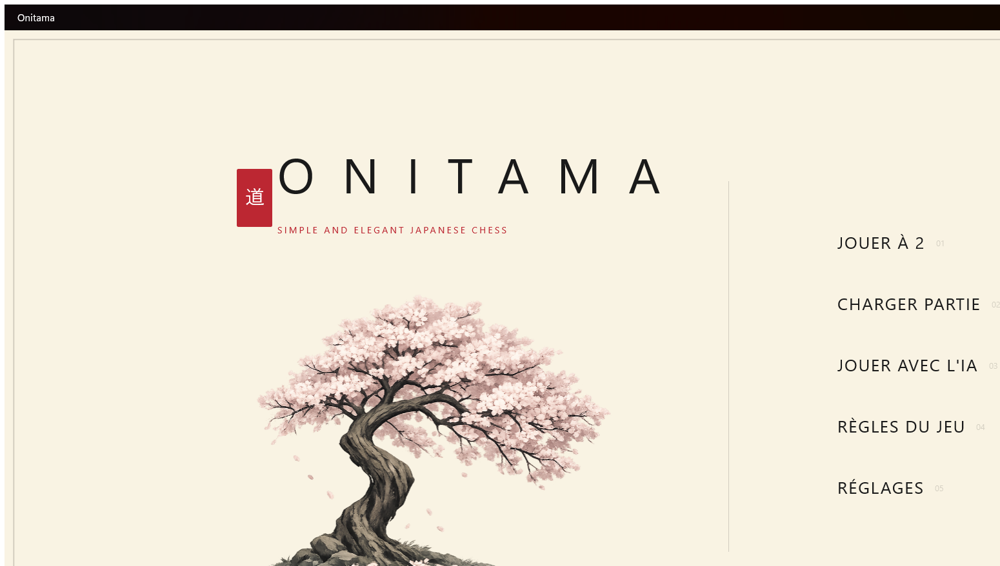
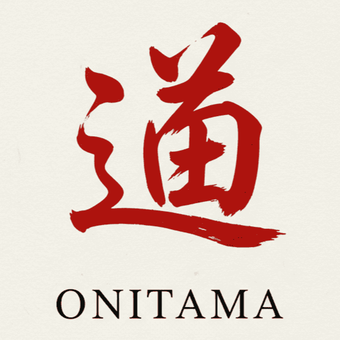

Project 2: building an application with a GUI
Context
Built in a pair over 18 weeks (around 200 hours) in the second semester of my first year, making it the longest project of my studies so far. The topic and the technology were set, but we were on our own for the whole design: architecture, how to split the classes, planning and task allocation. A supervising lecturer followed our progress and signed off each intermediate deliverable, acting as the client.
This project mainly covers competency C5 (Run a project), along with C1 (Build an application) and C6 (Work within a development team).
Goal
Adapt the board game Onitama into a desktop application with C# / .NET MAUI / XAML. What was expected went beyond the program itself: we had to deliver a playable application with its graphical interface, but also run the project with real management tools: user stories, wireframes, design diagrams, test tables and progress documents. How we worked counted as much as the code.
We also had to produce a visual identity for the game, since the interface was part of the marking.
What I did
My own contribution was mainly the technical design and the game logic. I worked on modelling the main classes (players, pieces, cards and the board) and on organising the architecture, separating the data from the business logic. I built several core features: handling the board, working out the legal moves allowed by each card, alternating turns and the win conditions. So I contributed a significant part of the project structure, the consistency of the code and the development of the functional logic.


Difficulties & what I learned
The main difficulty was turning the game rules into code: correctly handling the moves each card allows, alternating turns and the win conditions turned out to be far more subtle than expected. To get out of it, we took the time to restructure the classes, to draw a clear line between business logic and data, and to test far more regularly rather than at the end of the cycle.
The second hard part was two people working on the same codebase: with no clear split, we kept stepping on each other. This project taught me to organise my code better, to work cleanly in a team and above all to understand how much design matters before development.
Results
The deliverables were the Onitama application itself, the design diagrams, the user stories, the wireframes, the test tables and the progress documents. The project was delivered and defended at the end of the semester, with an application playable from start to finish. What I am proudest of: helping build a playable application that holds together technically, and keeping it that way over 18 weeks without the code becoming unreadable.
- The real move to object-oriented programming: modelling a domain as coherent classes, rather than chaining functions together.
- Running a project over time: planning, intermediate deliverables, check-ins with a supervisor playing the client.
- Working with someone else on the same Git repository: branches, conflicts, cross-reviews.
- A first experience of .NET MAUI and XAML, which is exactly the technology of my second-year specialisation.